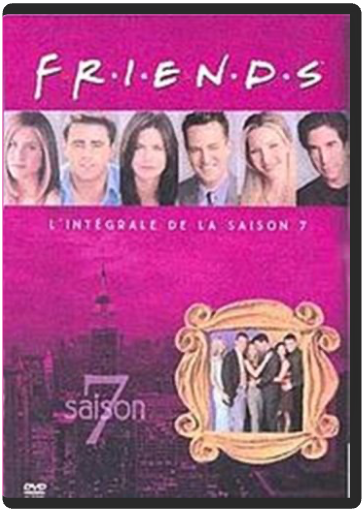

friends, saison 7  Le mariage de Chandler et Monica occupe la majeure partie de cette septième saison pimentée des quiproquos et déboires amoureux de Rachel, Joey, Phoebe et Ross, qui jouent aux appartements musicaux. Leurs tentatives pour trouver l'âme sœur se multiplient : sont-ils mus par le désir d'y arriver avant 35 ans ou bien n'est ce que l'envie de "franchir le pas" comme Monica et Chandler ? Beaucoup de souvenirs hantent cette joyeuse saison où l'intimité de chacun prend (un peu) le pas sur l'amitié de tous, où seuls les mariés ont ouvert les yeux sur ce qui les unit. Les autres continuent de chercher ailleurs ce qu'ils ont sous le nez. Pourvu qu'ils ne trouvent pas trop vite est tout ce qu'on leur demande. La fin de cette saison des Friends en annonce une huitième des plus alléchantes. —Aurélie Rochman  friends, saison 8 friends, saison 8 L'événement majeur de cette saison est sans conteste le bébé de Rachel et de... Ross ! Pourtant, ces deux-là ne sont plus ensemble, et les affaires se compliquent puisque Joey tombe amoureux de Rachel. Entre Ross, père de son enfant, amoureux transi de longue date, et Joey, certes drôle et touchant mais irresponsable, lequel la belle Rachel va-t-elle choisir ? C'est Janice-la-voix-de-crécelle qui fera sans doute pencher la balance, mais le suspense reste entier. Chandler, Monica et Phoebe sont un peu plus en retrait dans une saison où les histoires amoureuses semblent vouloir se concrétiser. Mais pas trop vite, messieurs les scénaristes, pas trop vite ! Laissez-nous encore savourer ces épisodes pleins de quiproquos et au comique irrésistible. Laissez-nous encore soupirer aux amours contrariées de Ross, Rachel, Joey et Phoebe ! Voilà une saison qui prouve qu'on peut imaginer huit années de la vie de six personnes sans jamais lasser les fans, au contraire. Notons les apparitions de guest-stars comme Brad Pitt (M. Rachel à la ville) dans un numéro étonnant et, on l'imagine, totalement à contre-emploi. En attendant la neuvième saison de Friends, on se repasse les huit précédentes ? Oh oui ! ——Aurélie Rochman  friends, saison 9 friends, saison 9 Les saisons passent et ne se ressemblent pas chez les Friends new-yorkais. C’est le triangle amoureux impossible amorcé en fin de huitième saison qui est au cœur de cette (déjà !) neuvième saison de Friends. Rachel est apprentie maman et a bien du mal à se décider avec qui faire sa vie. Entre Joey, qui l’a troublée et la trouble encore, et Ross, père de son enfant, il est ardu de choisir, même pour le bien de la petite Emma qui a visiblement hérité du caractère déjanté de ses parents, parrains et marraines ! Monica et Chandler, entre problèmes de boulots et accrochages de couples, veulent passer à l’étape suivante et concevoir un enfant à tout prix. Aimant particulièrement les placards, ils génèrent des quiproquos inénarrables, malgré la tristesse de leur insuccès. Phoebe réalise n’avoir jamais eu de relation sérieuse avec un homme, mais c’est peut être en passe de s’arranger. Avec cette nouvelle saison, un peu stagnante mais fidèle à l’esprit de la série culte, les Friends nous prouvent combien il est difficile de conjuguer amitié indéfectible, amour et vie de famille. Les bases de la dixième et dernière saison sont néanmoins posées. Joey et Rachel vont-ils concrétiser ? Suspense… —Aurélie Rochman  grey's anatomy, saison 1 grey's anatomy, saison 1 C'est l'arrivée de nouveaux internes à l'hôpital de Seattle, réputé pour son niveau d'apprentissage particulièrement difficile et son rythme de travail effréné. Meredith Grey, fille d'un chirurgien très réputé, Izzie et Christina sont 3 futures "blouses blanches" si jamais elles parviennent à survivre aux 7 années de travail acharné, privations et stress qui les attendent, elles deviendront de grands chirurgiens. Mais la vie ne s'arrête pas le temps de leurs études : famille, amis et petits amis, tout continue ! Meredith en fait la dure expérience en prenant sa première garde : le garçon avec qui elle vient de coucher n'est autre que son supérieur hiérarchique, le docteur Derek Shepperd...  grey's anatomy, saison 6 grey's anatomy, saison 6 Meredith Grey, fille d'un chirurgien très réputé, commence son internat de première année en médecine chirurgicale dans un hôpital de Seattle. La jeune femme s'efforce de maintenir de bonnes relations avec ses camarades internes, mais dans ce métier difficile la compétition fait rage. |


 Made with Delicious Library
Made with Delicious LibraryNancy, State zipflap congrotus delicious library Thomas, Julien